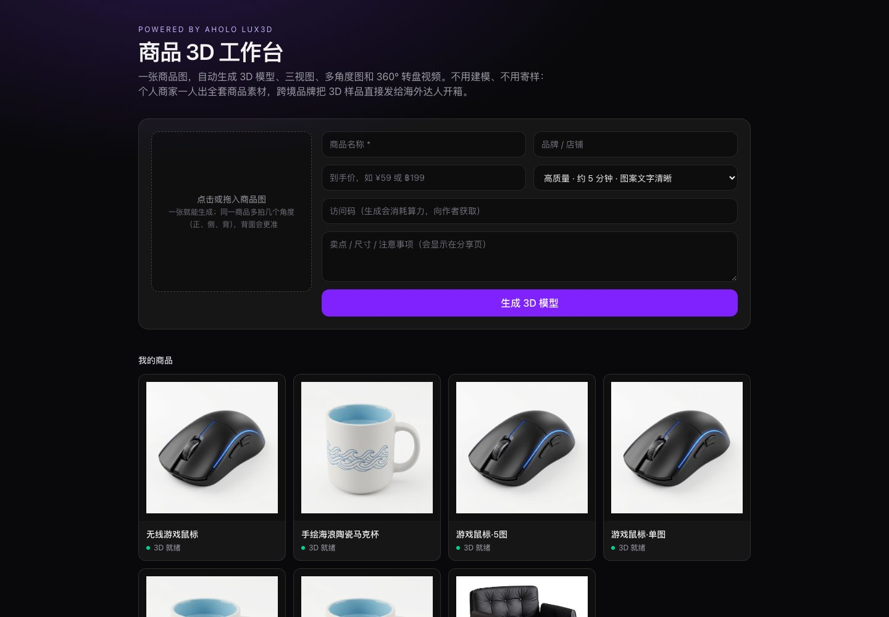
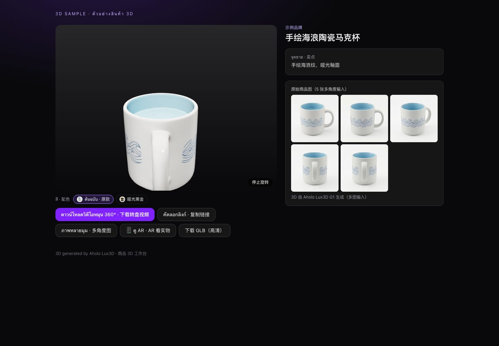

Product 3D Studio

Built for e-commerce merchants. The pain: listing one product means modeling, multi-angle studio shots and a video, which small merchants cannot afford. This tool takes one product photo in and gives back a 3D model, multi-angle images, a turntable video, color variants and an AR preview in one go, ready to list. The 3D comes from Manycore Aholo Lux3D image-to-3D; what I built is the studio merchants can use directly. Live site ↗ · GitHub ↗
How it works
- Upload 1 to 8 photos; multiple angles of the same product are more accurate; the frontend compresses before upload
- Two tiers: quick preview, about 1.5 minutes, shape only; high quality, about 5 minutes, patterns and text are clear
- An orthographic camera aims at the model's bounding box, renders six views (front, right, top, back, left, 3/4) and stitches them into a labeled sheet
- The turntable video is recorded in the browser, one turn in 6 seconds, no server involved
- Pick a preset or write one line; a color reference image is generated first, then the material is repainted on the same model; a reference image can also be uploaded directly
- AR preview: every model and color variant is exported to USDZ automatically; view it at real size in your room on a phone, useful for prints, decor and home goods where placement matters; iPhone uses AR Quick Look, Android uses Scene Viewer, desktop shows a QR code
- Share page in Thai and Chinese, read-only; creators and clients can rotate the model, download the turntable video and the multi-angle images without logging in; look first, then send the real sample
Decisions from testing
Before building, I ran the official sample, a mug and a gaming mouse through several rounds, logging time and results. Several product decisions came from that table.
What it looks like

Studio: upload a photo, pick a tier, your products below

Share page: Thai and Chinese, send to overseas creators before sending samples
Tools
Aholo Lux3D API · Next.js · Three.js · Vercel Blob · Written with Claude Code